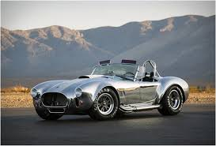

The Shelby Cobra 427 is an iconic American sports car known for its raw power, aggressive styling, and legendary racing pedigree. Originally designed in the 1960s by Carroll Shelby, the Cobra 427 was born from a collaboration between the British company AC Cars and Shelby’s racing expertise. The car’s defining feature was its monstrous 427 cubic inch (7.0-liter) Ford V8 engine, capable of producing over 425 horsepower, an astonishing number at the time. This lightweight, open-top roadster could go from 0 to 60 mph in just 4.2 seconds, making it one of the fastest production cars of its era. Shelby’s design combined a powerful American engine with a nimble British chassis, resulting in a car that was both thrilling on the track and beautiful in design, with its wide fenders, muscular stance, and classic curves.
The Shelby Cobra 427 quickly gained a reputation in the racing world, where its blistering speed and raw torque made it a formidable competitor. Shelby’s goal was to create a car that could take on Ferrari, and the Cobra 427 did just that, becoming a feared name on both the American and European racing circuits. Despite its fame, the Cobra 427 remained rare, with only a limited number produced, adding to its allure and value as a collector’s item today. Enthusiasts love the Cobra not only for its performance but also for the visceral driving experience it offers, as the powerful V8 engine delivers an unforgettable roar. Today, the Shelby Cobra 427 is celebrated as a timeless symbol of American muscle and ingenuity, with original models fetching millions at auction and replicas remaining popular among car aficionados around the world.
